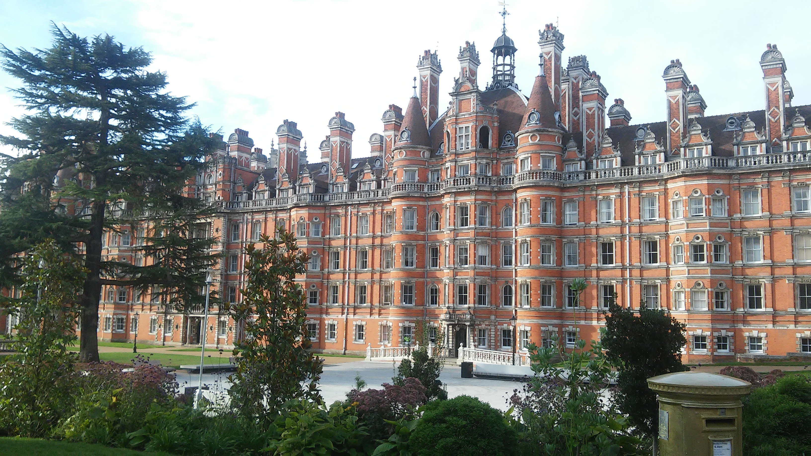

NCL 2018, Londres
Une fois tous les deux ans, la conférence internationale NCL regroupe les chercheurs de tous les pays pour partager les avancées de leurs activités sur la maladie de Batten. L'édition 2018 s'est déroulée à Londres du 12 au 16 septembre 2018.
La conférence s'est déroulée au Royal Holloway, dont le campus est situé à la limite du grand Londres, en direction du sud-ouest.
Le site internet de la conférence permet de visualier le programme de l'événement. On retrouve quelques éléments classiques dans les conférences scientifiques :
- Les Key Note Speaker, où des scientifiques reconnus sont invités à parler sur le sujet de leur choix ;
- Les Poster Session où les jeunes chercheurs présentent leurs activités récentes, devant un poster, généralement au format A4, qu'ils auront préparé pour illustrer leurs propos ;
- Les Session proprement dites, où les chercheurs ayant des résultats plus avancés viendront parler devant leurs pairs pour présenter ces travaux ;
- Les Social Events, où les participants se retrouvent à l'occasion de moments conviviaux, pour échanger plus librement ;
- Les Lay Summaries, où des chercheurs présentent rapidement un résumé de leurs travaux.
Comme à chaque édition londonienne, c'est Professeur Sara Mole qui préside la conférence.
Les différentes communications scientifiques restituées sur cette page prennent place dans une démarche de recherche médicale, dont les grandes étapes sont décrites sur la pages dédiée à la recherche sur la maladie de Batten. En particulier, les études pré-cliniques se placent très en amont de la mise à disposition des traitements, et si certains résultats présentés ici semblent prometteurs, il faut garder en tête les délais assez longs de ces processus.
NCL 2018 est une conférence par les chercheurs, et pour les chercheurs. Pendant ces présentations, ils ne prennent pas le temps de revenir sur les notions de biologie et de génétique qu'ils considèrent nécessaires à la compréhension de leurs travaux. Vous pouvez consulter la page consacrée aux mécanismes de la maladie pour retrouver en quelques grandes lignes les mécanismes sous-jacent aux maladies de Batten.
Vous pouvez également consulter la page consacrée aux traitements existants, conséquences de recherches antérieures.
L'association VML était représentée à cette conférence par Jean-Marie Favreau et Émeline Favreau. Dans la suite de ce document, ils proposent un résumé des interventions scientifiques de la conférence, regroupé par variante de la maladie de Batten. Vous pouvez également consulter une version détaillée de ce résumé, intervention par intervention.
Interventions scientifiques spécifiques à la CLN1
Bientôt disponible
Interventions scientifiques spécifiques à la CLN2
Bientôt disponible
Interventions scientifiques spécifiques à la CLN3
Bientôt disponible
Interventions scientifiques spécifiques à la CLN5
Bientôt disponible
Interventions scientifiques spécifiques à la CLN6
Bientôt disponible
Interventions scientifiques spécifiques à la CLN7
Bientôt disponible
Interventions scientifiques spécifiques à la CLN8
Bientôt disponible
Interventions scientifiques spécifiques à la CLN10
Bientôt disponible